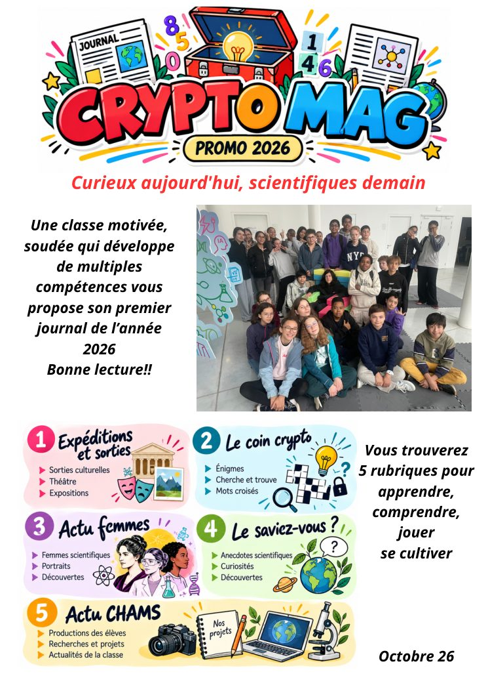
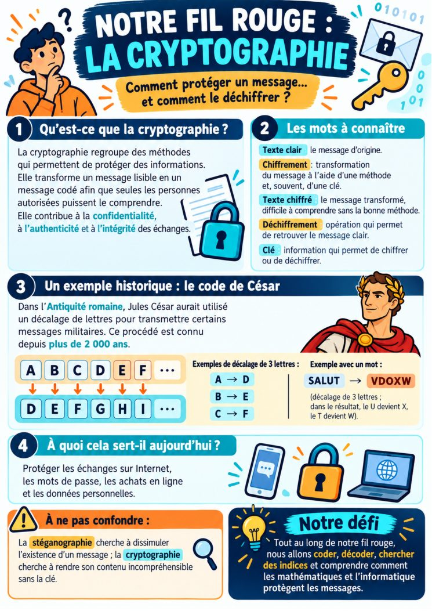

Une page ne se charge pas. Vérifiez que les fichiers page-01.jpg à page-20.jpg sont au même niveau que index.html dans GitHub.
Pages 1–2 / 20
Utilisez les flèches pour parcourir le journal ou cliquez sur une vignette pour accéder à une page.